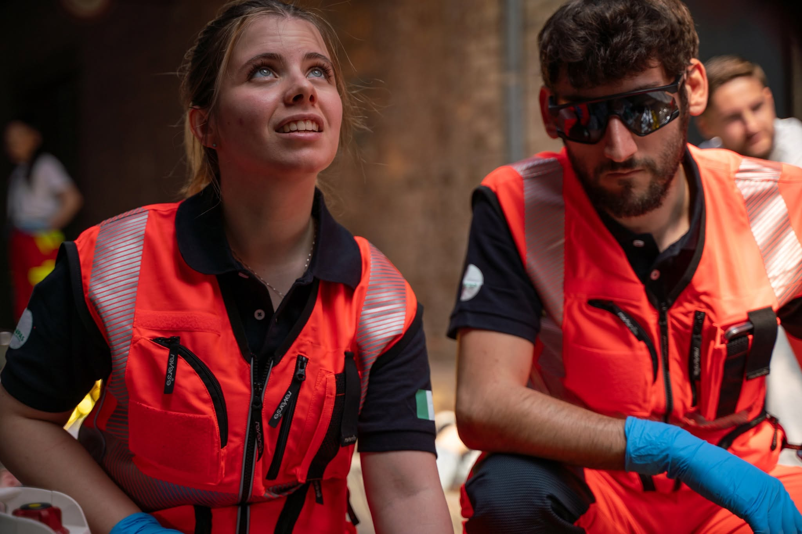

La Storia Di Anpas Nazionale
"Non c’è esercizio migliore per il cuore che stendere la mano e aiutare gli altri ad alzarsi."
— Henry Ford —
Dalle origini al Congresso di Spoleto
Le Pubbliche Assistenze nascono ufficialmente nel 1860 come associazioni di volontariato libere e laiche. Conosciute sotto una grande molteplicità di nomi — Croce Verde, Croce Bianca, Croce D'Oro, Società di Salvamento, Fratellanza Popolare — queste realtà, dalla Sicilia al Piemonte, condividono un unico, grande scopo: servire chiunque esprima un bisogno, senza porre condizioni e accogliendo chiunque voglia dare una mano.
Le loro radici profonde risalgono in realtà al 1848, all'interno delle "Società di Operaie Mutuo Soccorso" degli stati sabaudi, nate per tutelare i lavoratori dalle malattie e dagli infortuni. In un’Italia ancora elitaria e con forti differenze di classe, le categorie più deboli si organizzano dal basso per darsi risposte che né la carità dei singoli né lo Stato riuscivano a garantire.
L’associazionismo diventa sinonimo di democrazia e solidarietà: in un’epoca in cui il diritto di voto era legato al reddito, all'interno di queste associazioni la gestione è democratica, con elezioni a scrutinio segreto in cui tutti i soci hanno gli stessi diritti. Il soccorso sanitario, il sostegno ai poveri e l’educazione civile si diffondono rapidamente. Questo slancio solidale porta, nel 1892, al primo congresso nazionale a La Spezia e culmina nel 1904 al congresso di Spoleto.

Dalla fondazione alla Prima Guerra Mondiale
L'inizio del Novecento vede un forte radicamento delle Associazioni, specialmente nel centro e nord Italia. Al Congresso di Siena del 1905, si ribadisce la natura laica, civile e altruista delle Pubbliche Assistenze, totalmente slegate da influenze politiche o religiose.
Non si tratta solo di ambulanze: le associazioni lottano contro la tubercolosi, tutelano la maternità e l'infanzia, aprono asili notturni e promuovono l'alfabetizzazione collaborando con le Università Popolari. Dopo aver dimostrato ancora una volta il loro valore nel tragico terremoto calabro-siculo del 1908, la Federazione Nazionale viene eretta in Ente Morale nel 1911. Purtroppo, lo scoppio della guerra frena questo grande processo di crescita.

Il primo dopoguerra e lo scioglimento fascista
Al congresso di Genova dell'11 maggio 1919 si celebra la pace e si ricordano i tanti volontari caduti. C'è bisogno di riorganizzarsi, ma il clima politico sta cambiando.
Il Governo fascista inizia presto a osteggiare le Pubbliche Assistenze: la loro pratica costante di democrazia e la scelta di libertà sancita dai loro statuti sono incompatibili con il regime. Il colpo di grazia arriva il 12 febbraio 1930 con un Regio Decreto Legge che scioglie tutte le associazioni (compresa la Federazione) trasferendone beni e competenze alla Croce Rossa. Le pochissime che riescono a sopravvivere vengono sottoposte a uno stretto controllo prefettizio, privandole della loro libertà elettiva.

Il buio e il Congresso di Milano
Per quindici anni, la grande ricchezza umana e materiale del volontariato di Pubblica Assistenza viene smembrata o militarizzata. Durante la Seconda Guerra Mondiale, le poche sedi rimaste affrontano sfide immense tra mancanza di uomini, mezzi usurati e l'occupazione tedesca.
Tuttavia, con la Liberazione, inizia una nuova storia. Il 14 e 15 dicembre 1946, a Milano, 64 associazioni si riuniscono per il primo, vero Congresso Nazionale del dopoguerra. Viene approvato il nuovo statuto e inizia la battaglia per riavere i beni confiscati nel 1930 e ottenere una legislazione che tuteli il volontariato.

La Legge Ospedaliera e le grandi catastrofi
Il Dopoguerra è complesso: lo Stato repubblicano inizialmente conferma i decreti fascisti, lasciando il coordinamento dell'emergenza alla Croce Rossa e riducendo il ruolo delle Pubbliche Assistenze al solo "servizio" pratico, mettendo in ombra le loro grandi prospettive ideali.
Nel 1958 nasce il Ministero della Sanità e le associazioni chiedono a gran voce un rinnovamento strutturale. La necessità di una forte rete di soccorso diventa drammaticamente evidente nelle grandi catastrofi nazionali in cui i volontari intervengono in massa: l’alluvione del Polesine (1951), la tragedia del Vajont (1963), l’alluvione di Firenze (1966) e il terremoto del Belice (1968).

La nascita di A.N.P.AS.
Gli anni '70 portano grandi riforme: nascono le Regioni e, nel 1978, il Servizio Sanitario Nazionale, che finalmente riconosce per legge il ruolo attivo dei cittadini nella gestione della salute. Leggi fondamentali, come quella sull'obiezione di coscienza, portano nuove energie giovanili nelle associazioni. Dopo il terremoto dell'Irpinia del 1980, la spinta del volontariato porta alla creazione del Servizio Nazionale di Protezione Civile (1992).
Questa crescita costante trova il suo momento storico nel Congresso straordinario di Lerici del 1987, dove la Federazione cambia ufficialmente nome in A.N.P.AS. - Associazione Nazionale Pubbliche Assistenze. Viene approvato un nuovo statuto e introdotta la tessera nazionale per tutti i soci. Al Congresso di Modena del 1993, l'ANPAS supera definitivamente la sola "logica del servizio", rivendicando il suo ruolo politico di cittadinanza partecipativa e difesa dei diritti dei più deboli.

Le Radici in Sicilia
La nascita del Comitato Regionale
Sulla scia della secolare tradizione nazionale delle Pubbliche Assistenze, la presenza di ANPAS in Sicilia trova il suo coordinamento unitario in un anno cruciale per la storia del Paese: il 1992.
Non si tratta di una data casuale. Il 1992 è l'anno in cui in Italia vengono istituiti il sistema di emergenza-urgenza "118" e il moderno Servizio Nazionale della Protezione Civile (Legge 225/1992). In questo contesto di profonda trasformazione, le singole Pubbliche Assistenze siciliane, già attive e radicate nei propri comuni, avvertono la necessità di fare rete.
Nasce così il Comitato Regionale ANPAS Sicilia, con l'obiettivo di creare un interlocutore forte, unito e strutturato, capace di dialogare con le istituzioni regionali e di coordinare gli sforzi dei volontari su tutta l'isola. Da quel momento, la storia di ANPAS Sicilia diventa un viaggio in continua evoluzione, espandendo la propria mission per rispondere alle complesse esigenze di un territorio tanto meraviglioso quanto fragile.
Dal soccorso sanitario alle maxi-emergenze
Nei primi anni Novanta, l'impegno principale del Comitato Regionale è rivolto al soccorso sanitario. I volontari ANPAS, con le loro ambulanze, rappresentano una risposta vitale per le comunità locali, diventando un pilastro fondamentale nel supporto alla nascita e allo sviluppo del sistema 118 regionale.
Tuttavia, la particolare conformazione geografica della Sicilia richiede un rapido ampliamento delle competenze. ANPAS Sicilia diventa in breve tempo una realtà di eccellenza nel campo della Protezione Civile. Nel corso dei decenni, i nostri volontari sono intervenuti in tutte le principali emergenze territoriali e nazionali: la lotta agli incendi boschivi (AIB), formando squadre specializzate, e il rischio sismico, vulcanico e idrogeologico, garantendo assistenza durante le crisi eruttive di Etna e Stromboli, soccorrendo le popolazioni colpite da alluvioni e inviando colonne mobili nei grandi terremoti italiani.

La frontiera del sociale: l'accoglienza e la cittadinanza attiva
Essere una Pubblica Assistenza in Sicilia significa non girare mai lo sguardo di fronte alle emergenze umanitarie. Negli ultimi quindici anni, con l'intensificarsi dei flussi migratori nel Mediterraneo, la Sicilia è diventata la frontiera d'Europa. ANPAS Sicilia ha scritto una pagina straordinaria di solidarietà, presidiando le banchine dei porti (da Lampedusa a Pozzallo, da Augusta a Catania) per offrire prima assistenza sanitaria, supporto psicologico e un sorriso a chi sbarca in cerca di un futuro.
A questo si unisce un forte impegno nell'educazione alla legalità e nei servizi sociali. Operando in un contesto che richiede una continua affermazione dei diritti civili, ANPAS Sicilia collabora attivamente con altre realtà del Terzo Settore (come la rete di Libera) promuovendo il riutilizzo dei beni confiscati e diffondendo la cultura dell'antimafia sociale.

I Giovani e il Volontariato
Oggi, ANPAS Sicilia guarda al futuro investendo sulle nuove generazioni. Ogni anno centinaia di giovani siciliani entrano a far parte della nostra famiglia. Un'esperienza di cittadinanza attiva che non solo garantisce il fondamentale ricambio generazionale per le nostre associazioni, ma forma cittadini consapevoli, pronti a spendersi per il bene comune.
La storia di ANPAS Sicilia, dal 1992 a oggi, è la storia di donne e uomini liberi. Una rete laica e democratica in cui l'assistenza non è mai intesa come carità, ma come diritto del cittadino e dovere di solidarietà.
